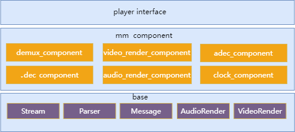

设计说明
aic-mpp
|--middle-media
|-base
| |-inlcude
| | |-aic_message.h //定义公共消息接口
| | |-aic_parser.h //定义 parser 接口
| | |-aic_stream.h //定义 stream 接口
| | |-aic_render.h //定义视频渲染接口
| | |-aic_audio_render.h //定义音频渲染接口
| |
| |-message //消息接口具体实现
| |-parser //parser 接口具体实现
| |-stream //stream 接口具体实现
| |-render //音视频渲染接口具体实现
|
|-audio_decoder //音频软件解码器，无硬件音频解码器。
|
|-openmax //播放器组件
| |-component
| | |-OMX_AdecComponent.c //音频解码组件,输入编码音频数据,输出解码后的 pcm 数据
| | |-OMX_AudioRenderComponent.c //音频渲染组件，将解码后音频送到音频设备播放
| | |-OMX_ClockComponent.c //时钟组件，为音视频同步服务
| | |-OMX_DemuxerComponent.c //解封装组件,识别文件的封装格式,从文件中解析出音视频 packet
| | |-OMX_VdecComponent.c //视频解码组件，输入编码视频数据，输出解码后的视频图像
| | |-OMX_VideoRenderComponent.c //视频渲染组件，将解码后图像显示在屏幕上
| |
| |-inlcude
| |-*.h //openmax 头文件
|
|-player
|-inlcude
| |-aic_player.h //palyer 接口定义
|
|aic_player.c //player 接口实现-
component 相比 V1 版本播放器删除 OMX 的 component 设计，变更为自研的 mm_component 框架，内容更加精简。
-
为了避免整体框架调整过大，该框架部分 API 仍然借鉴了部分 OMX 的思想，使得各组件间调用的接口更加统一和规范。
模块架构
player 在系统架构中的层次如下图
-
player 是中间件，向 App 提供 player 接口
-
player 视频解码调用 mpp_decoder
-
player 音频解码调用 audio_decoder
-
player 视频渲染操作 DE driver 提供的接口
-
player 音频渲染操作 Sound driver 提供的接口
-
player 内部实现解封装的功能
-
-
audio_decoder(音频解码器)
-
audio_decoder 是纯软件解码，目前移植了第三方的 libmad 和 faad ，支持 MP3 和 AAC 解码。
-
player 模块架构如下图,分为 3 层
-
第 1 层,player interface ,向上提供 player 接口,向下调用 OpenMAX 组件实现 player 功能。
-
第 2 层,OpenMAX Component,提供统一的组件操作接口。每个组件完成特定的功能,比如视频解码,视频渲染等。
-
第 3 层,Base，提供 parser，stream，message，render 接口和实现。
-
parser 提供解封装的功能，比如 MP4 封装
-
stream 提供解析流协议的功能，本地文件也看作是一种流协议，目前也只支持本地文件
-
message 为组件传递消息提供支持
-
render 提供底层音视频渲染的功能
目前支持 MP4 和 MP3 封装的本地文件，后续扩展其他流协议和封装格式，通过增加相应的 parser 和 stream 实现

-